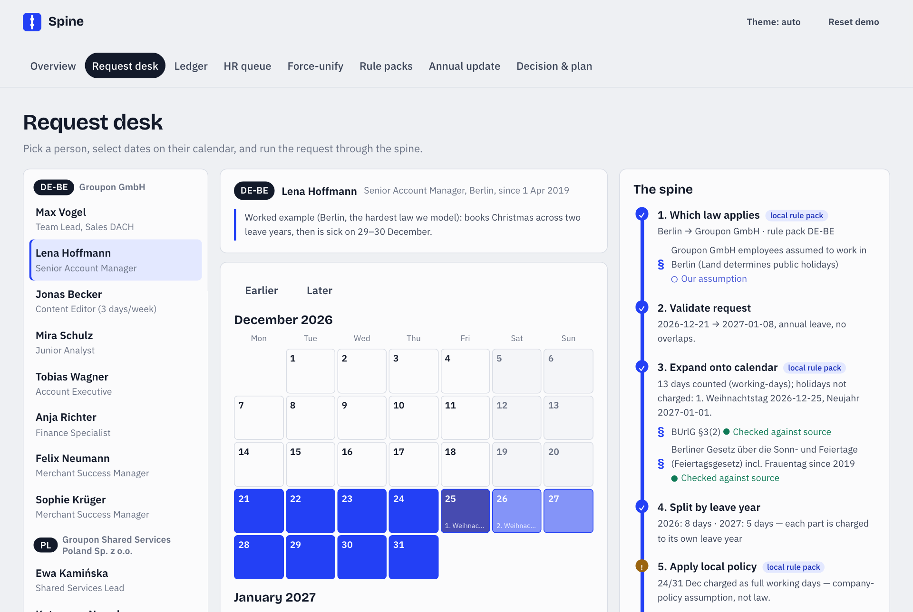
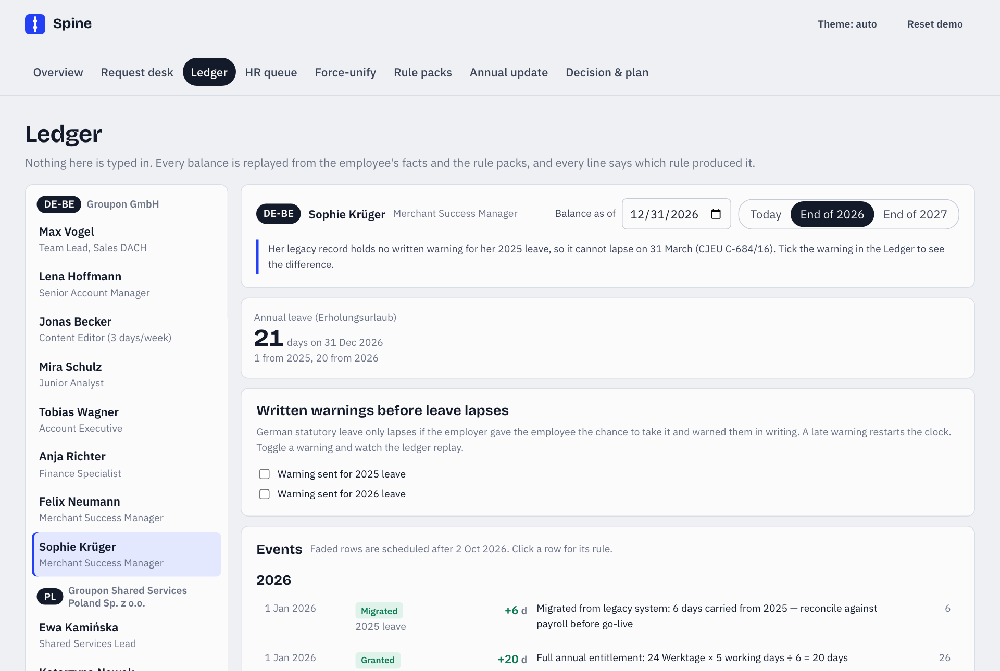
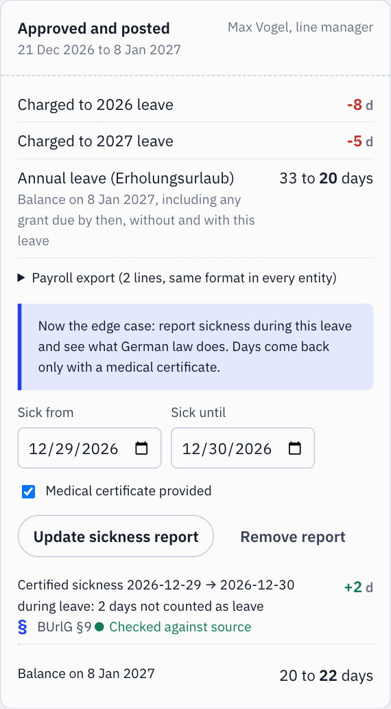
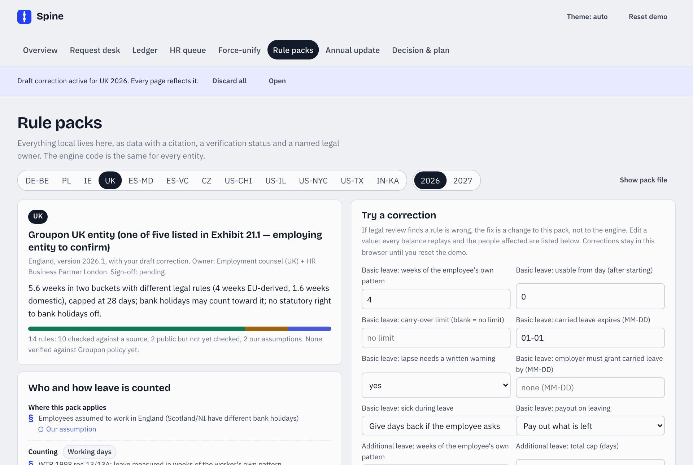
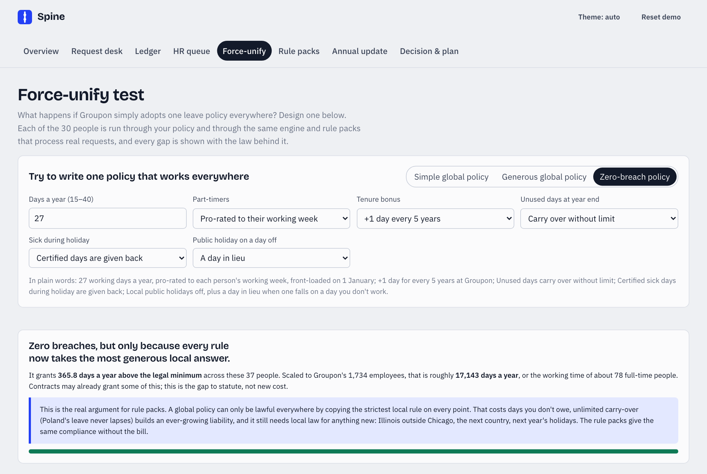
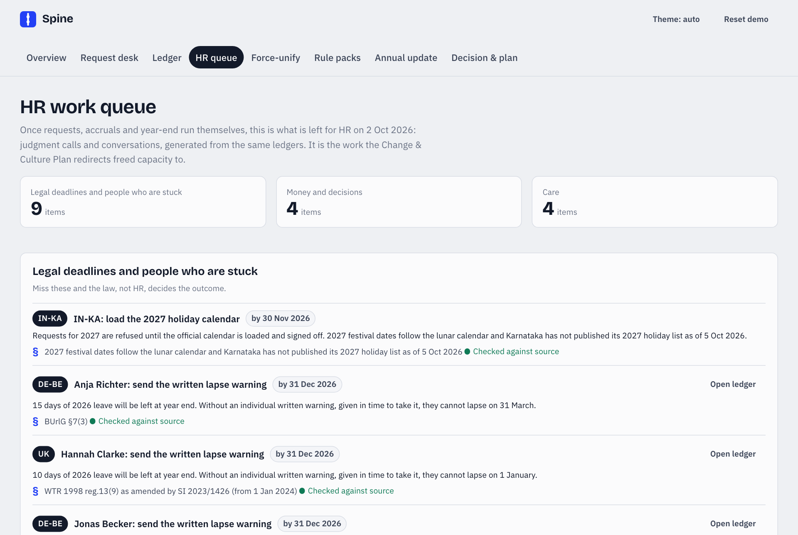
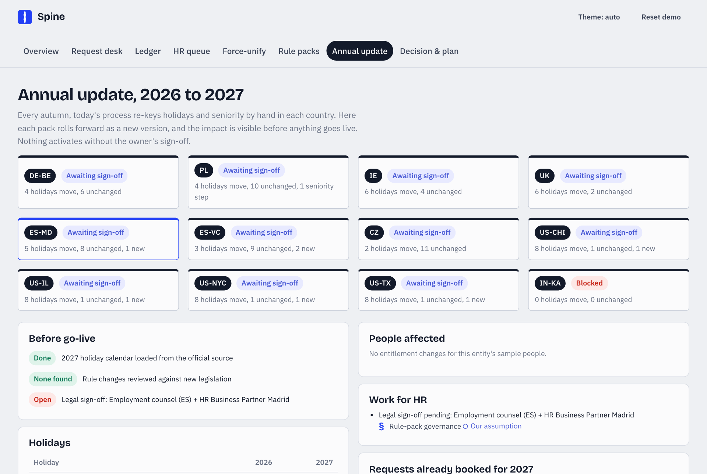
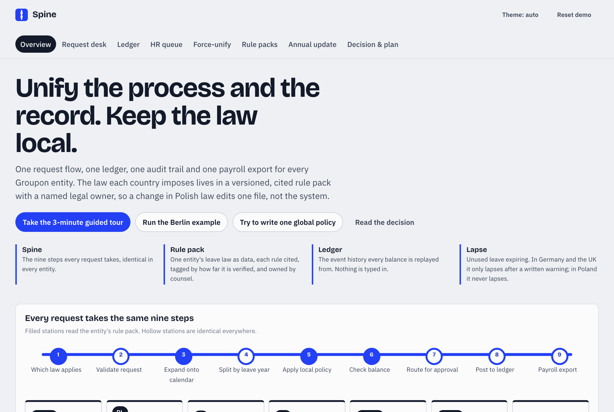
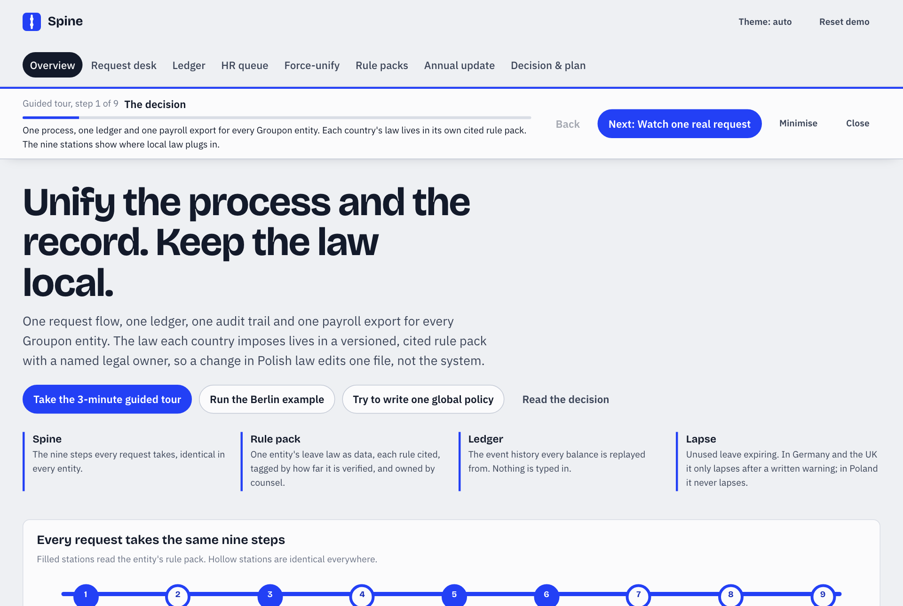

HR Transformation case study · Live demo · Repository
Spine gives Groupon one absence process, one ledger and one payroll export across every legal entity, while each country's law lives in its own cited, versioned rule pack. A balance is never typed in: it is replayed from events, and every number can show the statute behind it. That takes typing out of HR's day, and the time it frees goes to the conversations that make people want to stay.
"Unify everything" is the wrong instinct for absence. The process should be one thing everywhere: how a request is approved, recorded, explained and paid. The law cannot be. It differs by country, by region and even by city. Unifying the law breaks it, and leaving the process fragmented wastes people.
A deterministic rules engine and a desk on top of it. Requests run through the same nine steps in every entity. Local law plugs in at four of them, as data with a citation, a verification status and a named legal owner. A correction to the law is a one-file change with a test, not a system rewrite.
The decision in one line: unify the process and the record; keep the law local. Warsaw runs the operational pilot, where Groupon's multi-country payroll team sits, and Germany, the hardest law we model, shadows it through a full year-end.
Groupon's absence management is fragmented across its legal entities. Every country runs its own rules for accrual, entitlements and annual updates such as public holidays and seniority, and there is no agreed target design. The brief flags this as compliance-heavy, with real migration risk if it is forced into one system without legal review entity by entity.
The obvious answer, one global leave policy in one system, fails in a measurable way. I built a simulator that runs a sensible-looking global policy through the same engine and the same rule packs that process real requests. The policy is 25 days, a tenure bonus, use-it-or-lose-it, and sick days on holiday stay used.
Leave law differs in kinds that a single setting can't express, not just in amounts:
A global policy generous enough to be lawful everywhere has to copy the strictest local answer on every point. At Groupon's size that costs about 17,100 days a year above the legal minimum.
How these were built. Groupon asked for independent research rather than sharing internal material, so no user interviews were possible for iteration 1. These five personas are hypotheses, built from the case brief, Groupon's own 2026 job postings (People, payroll, benefits and engineering roles), the FY2025 10-K, and the legal research. They are written to be falsified: validating them is the first task of Phase 0, through interviews and a time-tracking baseline with the people in these roles.
Location: Warsaw | Experience: 6 years payroll | Scope: leave and payroll inputs for several European entities, via an external payroll provider and Workday
Location: Berlin | Experience: 10 years employment law | Scope: German entities; works-council relations
Location: Berlin | Team: 7 people across Berlin and Valencia | Leave booked in 2026: none
Location: Berlin | Situation: books 21 December to 8 January, then falls sick on 29–30 December
Location: Chicago HQ | Scope: People Ops across the US and Europe | Pressure: deliver an "AI-native" HR function after the 2026 restructuring
| Persona | Role in the process | Primary need | Key feature |
|---|---|---|---|
| Agnieszka | Runs absence and payroll inputs | Right first time, explainable | Ledger, payroll export, HR queue |
| Katharina | Owns the local law | Readable, signed, versioned rules | Rule packs, correction preview, annual update |
| Max | Approves | One flow, the context at decision time | Request desk, nine-step spine |
| Lena | Takes leave | A balance she can trust | Balance receipt with citations |
| Chris | Sponsors the change | An honest case, no surprises | Force-unify simulator, capacity model |
Each entity runs its own process and tools, so the same request is approved, recorded and paid differently in Warsaw, Berlin and Chicago.
Every variant needs its own people, training and checks. Shared Services can't scale a process that differs everywhere.
The same nine steps everywhere: jurisdiction, validate, expand onto the calendar, split by leave year, local policy, balance, route, post, export. Only four of them read the local pack.
Balances are typed into systems or spreadsheets. When someone asks "why is it 13?", the answer depends on who is asked.
It drives disputes, repeat questions and distrust. Since April 2026, UK law also requires six years of holiday records.
An append-only ledger: every balance is replayed from events, and every line names the rule, the pack version and whether that rule has been verified.
Each autumn, holidays and seniority steps are re-keyed by hand in every country, often from secondary sources.
A blog listed 24 June as a Madrid holiday; the official decree doesn't. Madrid's 2027 decree arrived on 1 October 2026, and India's 2027 festival dates aren't published yet.
Packs roll forward as new versions, taken from official decrees. The diff shows holidays that move, seniority steps reached and HR tasks before activation. If a calendar isn't published, the engine refuses to guess.
Leftover leave is assumed to lapse at year end or on 31 March.
In Germany (CJEU C-684/16) and, since 2024, the UK (WTR reg. 13(16)–(17)), leave lapses only if the employer gave the chance to take it and warned in writing. Polish and Czech leave never lapses. Without warning letters on record, carried balances survive, a liability nobody has counted.
Models conditional lapse per pack, shows "lapse blocked" in the ledger, and queues the warnings HR must send before 31 December.
HR spends its time typing and checking. After a restructuring, the people doing this work fear that automation means they are next.
Lose them and you lose the only real copy of the local rules. Survivors of a restructuring are also the classic burnout group.
The HR work queue turns freed time into named work: lapse warnings, final-pay checks, and wellbeing check-ins for people who haven't taken a break. Local admins become rule-pack stewards.
Spine is not proposed as a new HR system. Groupon's own job postings name Workday as its HRIS, and payroll runs through an external provider from Warsaw. The question is what each option does to the two halves of the problem: one process, and local law.
Already Groupon's HRIS; one process and one record are achievable.
Configuration encodes the law with no shared, testable specification; correctness depends on whoever configured it.
A wrong configuration underpays an entire entity, silently.
The rule packs and 174 engine tests become the acceptance test for the Workday configuration.
Simple to explain, and one rule set.
66 breaches across 35 of 37 sample people; lawful only where no law exists.
Statutory breaches, or about 17,100 days a year of overspend to avoid them.
The simulator makes this visible before anyone commits to it.
No migration risk; local experts own it.
No shared process, no explanation, and annual re-keying by hand.
Key-person dependency; no 6-year UK records; liability goes uncounted.
Keeps the local expertise and writes it down as packs.
Local compliance handled by the provider, where they employ the staff.
Only covers people they employ; Groupon's core entities employ directly.
A second process alongside the main one.
Relevant for Prague, where the employing vehicle is unknown.
Positions are qualitative judgments, not measurements.
Every scenario below runs end to end in the live demo. The guided tour walks through them in about three minutes.
She selects the dates on a calendar already painted with Berlin's holidays and her working pattern.
Berlin holidays aren't charged, the request splits into 8 days of 2026 leave and 5 of 2027, and the 24/31 December assumption is flagged.
Two ledger events are posted and two payroll lines are exported, each stamped with its pack version.
| User action | System response |
|---|---|
| Check request | 9 stages animate; local-pack stages are labelled; the receipt shows 33 → 20 days by 8 January |
| Approve as line manager | Ledger updated, payroll lines created, sickness reporting offered |
German law gives the 2 days back; the ledger posts "Restored +2 d" citing §9, and her balance rises from 20 to 22.
The report is replaced; nothing comes back, and the ledger explains why: no medical certificate.
UK: days come back only if the employee asks. Poland: leave is postponed. Chicago: hours move to the sick bank. Each is pack data, not code.
The legacy record holds no written warning, so it cannot lapse: the ledger shows "Lapse blocked".
The ledger replays: the leave can now lapse at the end of the leave year in which the warning was given.
Five German and three UK employees, all with leftover 2026 leave.
66 breaches, affecting 35 of 37 people. Only the people in Dallas and New York are unaffected.
Still 9 breaches: Polish and Czech leave never lapses, and a UK 3-day worker is 0.2 days short because UK law counts in weeks.
Lawful everywhere, by copying the strictest answer on every rule, at about 17,100 days a year above the legal minimum. That is the argument for rule packs.
Loading it is one file; the diff shows San José as new and the Assumption moved to Monday 16 August.
His entitlement steps from 20 to 26 days, topped up that day (art. 158).
Bookings for 2027 are refused, not guessed, and the HR queue holds a deadline task.
The test for every rule: would two entities ever legitimately need different answers? If yes, it goes in a pack.
Balances are replayed from an append-only ledger; nothing is edited in place.
Each event carries a rule id, citation, pack version and verification badge.
No calendar, no pack, no valid pattern: the request is refused with the reason.
A legal correction is one JSON field plus a test, previewed before it's applied.
Checked, unchecked and assumed rules are labelled differently, everywhere.
The engine is deterministic; AI was used for research and for building, never to decide leave.
Sickness is stored as "unfit, from–to, certified yes/no", never a diagnosis (GDPR Art. 9).

One pipeline for every entity. The calendar shows local holidays and the working pattern, and the spine shows each stage with its rule.

Balances replayed from events: grants, accruals, debits, restores, carry-over, lapses, payouts. Click any line for its statute.

Sickness during leave, conditional lapse, part-time units, regional holidays and the US location rule, all driven by the pack.

12 jurisdictions, each with citations, verification badges, a named legal owner and a sign-off gate.

Design a global policy and watch it breach local law, or cost about 17,100 days a year to avoid breaching it.

What is left for people: legal deadlines, final-pay checks, entity decisions and wellbeing check-ins, generated from the ledgers.

The next year's packs with holiday moves, seniority steps, HR tasks and affected bookings, before activation.

Edit any rule and see every affected balance replay, the mechanism for applying legal feedback safely.

A 9-step walkthrough for stakeholders, with the decision, the change plan and the assumptions rendered in the app.
Replays the scenario suite against an exported Workday absence configuration and reports differences.
The balance receipt in the employee's language, with a named person to ask.
German law (SGB IX §167) requires a return-to-work offer after 6 weeks' sickness in 12 months. Subject to the works agreement and the DPIA.
A working engine and desk, 12 jurisdictions, 152 cited rules, 174 engine and 23 browser tests, an adversarial fuzzer, two UX passes and two code reviews.
Map the as-is process, take a time baseline, collect contracts and works agreements, start the DPIA, inform the works council and employee representatives, and validate the personas.
Counsel signs off the packs, Workday is configured until it passes the tests, and a migration dry run is done.
Warsaw pilot with Berlin shadowing it, through the 31 March German lapse. Exit: two clean months.
Poland, then Germany and Ireland, then the UK, the US and Spain for the 2028 leave year, then Prague and Bengaluru.
The share of leave transactions that go from request to payroll with no manual touch and no unexplained difference against payroll. It moves only when the process is unified and the law is right.
| Influencer | Metric | Target | Why it matters |
|---|---|---|---|
| Rule verification | % of rules checked against primary law and signed off | 100% before go-live | An unchecked rule is the main source of systematic error |
| Opening balance reconciliation | Differences over 0.5 days explained | 100% | Migration is the riskiest single event |
| Lapse warnings on record | DE and UK staff with leftover leave who were warned | 100% by 31 Dec | Without them, leave can't lapse |
| Calendar readiness | Next-year calendars loaded by 30 November | 100% | Otherwise bookings are refused |
| Signal | What it tells us | Action |
|---|---|---|
| Repeat balance questions | The receipt isn't explaining well enough | Rewrite copy; add the local-language receipt |
| Approvals outside the tool | A shadow process is forming | Make the discretionary leave type explicit |
| HR ops attrition or pulse dip | The automation is read as layoffs | Revisit communications; restate redeployment commitments |
| People under 40% of leave by September | Workload and burnout risk | Manager conversation, from the HR queue |
This is an internal capability, so there is no pricing; the economics are capacity, risk and quality. The capacity estimate is a bottom-up model with every input exposed. No independent benchmark exists for HR minutes per leave request, so these are planning assumptions, replaced by Groupon's own baseline in Phase 0.
| Item | Value | Note |
|---|---|---|
| Population | 1,734 | FY2025 10-K, before the 2026 restructuring |
| New work counted as a cost | 640 h/yr | Rule-pack stewardship plus a 0.25 FTE platform owner |
| Central saving as a share of HR | ~5% | Illustrative, against CIPD's 1:60 HR-to-employee ratio |
| Not counted as savings | — | Avoided breaches, disputes and audit time |
| Not counted as costs | — | Counsel sign-off, the parallel-run load, the works-council process |
Recommendation: take the capacity as redeployment, not headcount. Decide at month 6, on measured numbers, and if leadership wants headcount, take it through attrition. The freed time goes to the HR queue's named work.
The HR and payroll admins whose work changes hear it first, from their own HR lead, with the honest answer about their jobs, before anything is written down.
Counsel reviews the packs. The works council is informed and consulted before any real data enters the system (BetrVG §§80, 90; §87(1) Nr. 6), and representatives in other entities as their law requires.
The old process stays the system of record. Differences are triaged weekly by the local admins, with temporary backfill for the extra load. Cutover requires two clean months.
Managers are trained four weeks before the run; employees get a note at the run and the full receipt at cutover; the wider company hears only after the first gate passes, with no headline about "automation" or "AI".
| Risk | Severity | Mitigation | Early warning |
|---|---|---|---|
| A wrong rule underpays a whole entity | High | Counsel sign-off, tests per rule, parallel run, correction preview | Differences clustered on one rule |
| Introduced without German co-determination | High | Inform and consult before any real data; a works agreement | The works council asks for an expert; talks slip |
| HR admins read it as the next layoff wave | High | Heard first, in person; no headcount claim before measurement; co-authorship | Pulse dip; attrition; slow triage |
| Uncounted lapse liability surprises Finance | Medium | Quantify in Phase 0; send warnings from 2026 | Large "lapse blocked" totals in the dry run |
| Health data mishandled | Medium | No diagnosis stored; DPIA; role-based access; SCCs as fallback | Open DPIA findings |
| Calendar not loaded in time | Medium | HR queue deadline task; two owners per pack | Annual update not started by 1 October |
| Savings claimed but not delivered | Medium | Publish the measured range and method; say where capacity went | An FTE number asked for before month 6 |
Packs exist for every Groupon hub with public hiring evidence. Each line below is what makes that jurisdiction impossible to fold into a global rule.
| Jurisdiction | What makes it different | Verified rules |
|---|---|---|
| Germany (Berlin) | Werktage; 6-month waiting period; §9 sickness; lapse only after a warning | 8 / 12 |
| Poland | Seniority counts education; 4 on-demand days; leave never lapses | 12 / 13 |
| Ireland | Holiday on a day off: the employer chooses the remedy | 9 / 11 |
| UK | 4 + 1.6 weeks; carry-forward without a warning (2024); 6-year records (2026) | 10 / 14 |
| Spain (Madrid, Valencia) | 30 calendar days; holidays differ by region and city | 7 / 10 each |
| Czech Republic | Counted in hours; never lapses; employing vehicle unknown | 10 / 11 |
| US (Chicago, Illinois, Dallas, New York City) | The law follows the work location; from two banks in Chicago to no law at all in Dallas | 28 / 55 |
| India (Bengaluru) | 1 day per 20 worked; 45-day carry; state Act alongside the national labour codes | 6 / 16 |
| Method | Scope | Output |
|---|---|---|
| Source request to Groupon | Process map plus six factual questions | Reply: independent research expected |
| AI research agents, wave 1 | 10-K and 8-K, 10 countries' leave law, works councils, GDPR, benchmarks | Entity scope, change-plan inputs |
| AI research agents, waves 2–3 | Primary texts in 12 jurisdictions, plus Groupon job postings | 97 of 152 rules checked; corrections logged |
| Engine tests | One or more per legal rule | 174 passing |
| Adversarial fuzzer | ~28,000 random employees, ~150,000 requests | 7 bugs found and fixed |
| First-time-reviewer UX passes (2) | Every view, 5 screen sizes, dark mode | All confirmed findings fixed |
| Independent code reviews (2) | The full branch | All confirmed findings fixed |
| Browser tests | Key journeys, no console errors, 400px layout | 23 passing |
AI agents did the research legwork and most of the coding, test-first. The boundary decision, the choice of edge cases, the pilot change and the call on headcount are mine, and each correction where my judgment overruled the research is logged in DECISION.md.